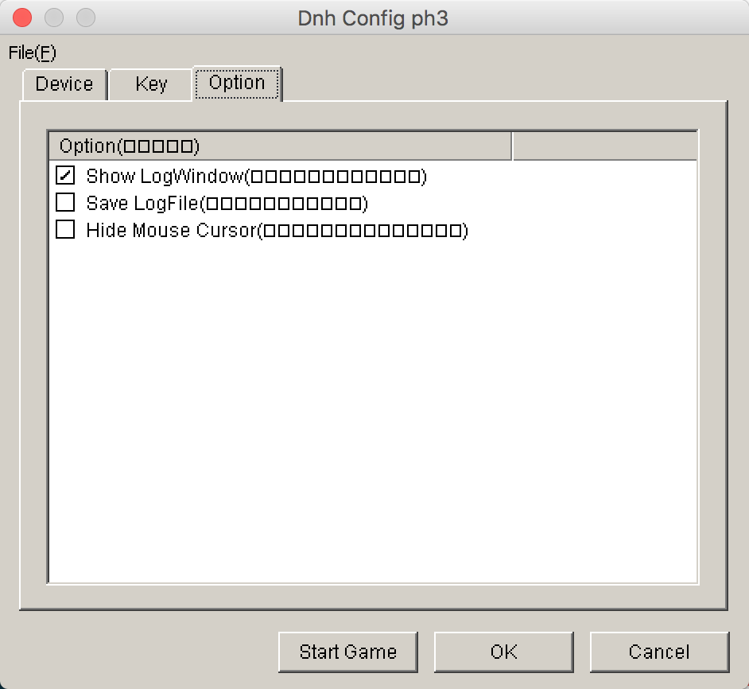
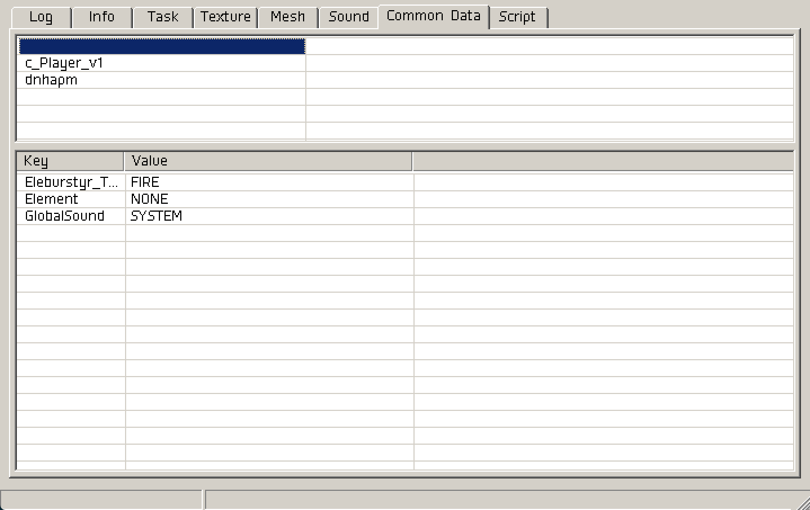

Sparen's Danmakufu ph3 Tutorials Lesson 31 - Utilizing the Log Window and Debug Functions
Table of Contents
Part 1: What will be covered in this lesson?
In this lesson, we will cover usage of the Log Window as well as usage of the debug functions in Danmakufu. We will also discuss data type conversion in the context of generating strings for debug statements.
Part 2: What is the Log Window and how do I use it?
Let's begin our discussion with the Log Window. If you have not yet enabled it, I recommend opening Danmakufu's config.exe and selecting the relevant checkbox as seen below:
The Log Window itself has 8 tabs - Log, Info, Task, Texture, Mesh, Sound, Common Data, and Script.
Log is the default tab and contains timestamps for all key happenings in Danmakufu - it logs when textures are loaded, logs when scripts starts, etc. All calls to WriteLog, which we will discuss later, output their content here.
Info is the most useful tab for general purposes. Work and Draw FPS is displayed here as well as screen data and cache data. However, the script task count, object count, shot count, and enemy counts are what are really important. It is not uncommon to leave out edge cases in a script, allowing for a task to not end. In short scripts, this generally isn't a problem. However, in long scripts where object IDs get reused internally by Danmakufu, unterminated tasks (e.g. tasks waiting for an object to be at X position) may suddenly come back to life, doing unintended and unpredictable things. Object count and shot count should always be monitored to ensure that spellcards and other attacks always clean up after themselves. In short, when developing, check to see if there are any undeleted objects or unterminated tasks, as they may cause problems later.
Task is the second least useful tab in the log window. It displays Danmakufu's internal task system - however, these are not the tasks that scripters make and the information here is generally useless unless something goes horribly wrong with Danmakufu.
Texture, Mesh, and Sound all display assets in use by Danmakufu. Each has the memory location, name, full path, and number of references (IE number of objects using those in addition to manual load calls). Textures also have their dimensions listed. It is recommended to access these tabs if you have weird crashes or lag - too many references to an object may be a sign that objects aren't being deleted, and if your image dimensions are very large you may run into issues with memory. Unloading resources you no longer need is a common technique that is more relevant to full games and very long scripts, but it's something that these three tabs can help with.
Common Data is one of the most useful tabs in the Log Window, showing the current values of all Common Data in use in a script. These are grouped by Common Data Area, with the very first row (with no text) being reserved for the default Common Data Area. When debugging larger projects, this tab will prove immensely useful. Note that if your CommonData is too complex however (e.g. large 2D arrays), opening this tab can cause Danmakufu to crash or freeze.
Finally, the Script tab only has an option to quit the current script by force. This is generally useless.
Part 3: How do I use Danmakufu's Debug Functions?
Now that we've discussed the Log Window, let's talk about the three debug functions available in Danmakufu. These are WriteLog(), RaiseError(), and assert().
All three of these allow for a string message. The difference is delivery - WriteLog writes to the Log Window, requiring that you have it open in order to view the output. RaiseError throws an error and terminates the script, allowing for only one error. And finally, assert allows you to check a condition and on failure, throws the error message similar to RaiseError. Of these, assert is only useful if you're writing a library for someone else to use. WriteLog and RaiseError are useful for testing if code is running or checking what a given variable's value is. However, it is worth noting that since they only take strings, you will need to typecast all of your numbers to string and will need to use ~ to concatenate everything together, resulting in some pretty aggravating logging.
The Go-To method for casting will be ToString(). While IntToString() also exists, it truncates decimal places and takes more time to write if you are not using a text editor with autocompletion. itoa() is equally useless unless you are specifically testing for that functionality. The other text functions have their purposes but unless you are doing nice formatting with your numbers, they are typically not used in debugging.
And with that, we've covered the Log Window and Danmakufu's debug functions. Of course, it is possible expand upon these and build tools to make the debug experience better, but those are beyond the immediate scope of this particular guide.
Summary
- The Log Window contains information on current task and object counts
- The Log Window contains information on asset paths and references
- The Log Window lists current values of common data including area common data
WriteLogandRaiseErrorcan be used for debuggingToStringcan be used to convert integers and other data types to strings
Sources and External Resources
N/A